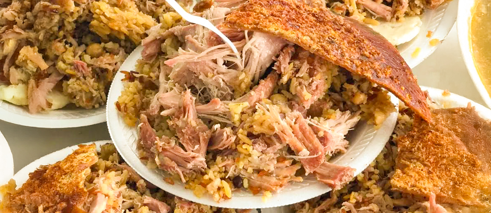

Lechona tolimense
Go back to index

Typically reserved for large gatherings and special occasions due to its time-consuming preparation, lechona is especially popular during holidays like Christmas, New Year's, and festivals. The star ingredient of lechona is a whole pig, the insides of which are completely taken out and then filled with marinated meat and split peas. Usually, the pig weighs around 100 kilos, meaning it can feed about 800-900 people. The meat is marinated in a mixture of green onions, garlic, and spices, namely cumin, black pepper, and salt. Sometimes paprika will be included as well. The stuffed pig is cooked and roasted in a clay oven for about 12 hours. Lechona is served on a black ceramic plate, topped with a leaf of cachaco. Alongside the meat, insulso and corn arepas are traditionally served.
How to make Lechona Tolimense
The following is the traditional, Tolima-style, lechona recipe. Preparing this traditional roast pig involves carefully butchering, marinating, and layering pork, split peas, and caramelized onions inside the pig's salted skin. The skin is sewn tightly to encase the rich filling, then slow-roasted for hours to achieve a golden, crispy exterior and tender, flavorful interior. Brushed with bitter orange juice during cooking, the skin develops its signature crunch and tang.
Lechona Ingredients
For 50 servings. Follow closely so you get the original flavour. Pro tip: Although a lot of recipes include rice, traditional Tolima lechona does not have rice; it only has split peas.
- 1 piglet, weighing 55 lbs/25 kg alive.
- 3.5 lbs/1.6 kg split peas, soaked and cooked until soft.
- 2 lbs/900g white rice, cooked (replace with split peas if you do not want to use it and want to be in line with tradition).
- 4 cups/1 kg lard.
- 10 lbs/4.5 kg pork meat, cut into pieces, to stuff the pig.
- 1.5 lbs/680g green onions, only white parts, chopped finely + 3 lbs/1.35 kg green onions, finely chopped x 2.
- 2 x 0.5 lb/225g garlic.
- Cumin, to taste.
- Black pepper, to taste.
- Salt, to taste.
- Bitter orange juice, for glazing the skin, as needed.
How to Make Lechona Step-By-Step
- After the pig is slaughtered, collect the blood for making blood sausages if desired.
- Carefully remove the skin, leaving about a 1-centimeter (0.4") layer of fat (bacon) attached to the skin.
- Generously salt the inside of the pig. This step is crucial for achieving a golden and crispy skin during cooking.
- Chop all the meat and bones into small pieces using a cleaver. Ensure that the meat remains attached to the bones and ribs.
- Blend 0.5 lb/225g of garlic, 3 lbs/1.35 kg green onions, and 240 ml/1 cup of water into a smooth mixture.
- Combine the marinade with the chopped meat and mix thoroughly.
- Season the pork meat (10 lbs/4.5kg), cut into smaller pieces, with the same mixture as the the previous meat.
- Let the seasoned meat rest for a few hours to absorb the flavors.
- Fry finely chopped onions (1.5 lbs/680g green onions, only white parts) in lard, then mix them with cooked rice and peas.
- Lay the skin flat, with the inner side facing up. Begin layering: first, a thick layer of chopped meat and bones; second, a layer of the onion, rice, and pea mixture; third, a layer of additional pork meat; and fourth and final, a layer of the onion, rice, and pea mixture.
- Sew the skin together with thick thread using a cross-stitch technique, ensuring the seam is secure.
- Turn the stuffed skin over and place it in a large container or tray with holes to allow the fat to drain. Place another container underneath to collect the drippings.
- If using a clay or brick oven, cook at high heat for 8 hours, followed by 2 hours at medium heat.
- If using an electric or gas oven, set the oven to 400°C (750°F) for 3 hours, then lower the temperature to 200°C (390°F) and cook for an additional 2 hours.
- Before placing the lechona in the oven, brush the skin with bitter orange juice. Repeat this step throughout the cooking process or occasionally sprinkle it with cold water to enhance crispiness.
Enjoy!